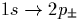
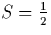
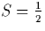

The shallow thermal donors (STDs) are a family of defects which can be
formed by annealing N rich Cz-Si around 650 C
[184,185,186,187,165]. As single donors
they have ionisation energies from 0.0347 to 0.0374 eV
[188]; this is comparable with P, and is much shallower
than the thermal double donor (TD) (0.0530 to 0.0693 eV). N is known
to suppress TD formation [189].
C
[184,185,186,187,165]. As single donors
they have ionisation energies from 0.0347 to 0.0374 eV
[188]; this is comparable with P, and is much shallower
than the thermal double donor (TD) (0.0530 to 0.0693 eV). N is known
to suppress TD formation [189].
EPR experiments of Hara et. al. [190,191] found STD defects to have S=1/2 with a g-tensor extremely close to that of the NL10 defect. This led them to suggest that they were the same defect. The g-tensor shows that the STD possesses an apparent C2v symmetry. However EPR and ENDOR studies have failed to resolve any hyperfine splitting in the defect core [190,192] and so the presence of N in the defect is only inferred from its presence in the material and remains controversial. Although several studies claim to have shown that both O and N must be present in the Si for STDs to form [189,190,165], other workers [168] find STDs in nominally N free Cz-Si. In addition, large N concentrations can actually suppress STD formation [193]. We believe that the explanation of these conflicting observations lies in a) that other defects, not containing N, can be STDs, and b) there are other electrically inactive nitrogen-oxygen defects which form in competition with the N-related STDs (see Chapter 7.4).
The IR electronic absorption lines observed by Suezawa et. al. [165] originated from several different families of STDs. In addition, calculations using effective mass theory by Griffin et. al. [188] suggest that the different families of STDs are due to different numbers of oxygen atoms surrounding a common core, with larger oxygen complexes leading to increasingly shallow donor behaviour.
Recently, Yang et. al. annealed N-doped Si containing STDs [189]. As their concentration decreased, the concentrations of Oi and N-pairs, as monitored by IR spectroscopy, increased. Conversely when STDs formed, the concentration of both Oi and N-pairs decreased. This unfortunately cannot be taken as direct evidence that these elements are part of the STD, because it is known that electrically inactive NNO defects can be formed around the same temperature as STDs [103] (Section 7.4), and this confuses the issue. It seems to us that while N pairs would complex with Oi creating inactive NNO defects [177], Ni defects could form active centres.
Liesert et. al. [168] observed PL from STDs in
samples that were nominally N-free. It may be that there was an
undetected level of N in these materials but it is worth considering
whether STDs can be formed with different core centres. One such
possibility to be considered below is an oxygen complex with Ci-H.
The latter defect is to be distinguished from the marginally stable
substitutional carbon - hydrogen defect [194,195]. A
CiH defect complexed with a substitutional carbon atom
forms the T-centre [196] which is observed when Cz-Si
containing carbon is annealed between 450 C and 600
C and 600 C
[197]. There is no deliberate H doping of these materials
showing that H is a common and unintentional impurity in Cz-Si
[198,199]. The chemistry of CiH seems very
similar to that of Ni and hence it is plausible that (CH)iOn
defects could form in C, O and H rich Si.
C
[197]. There is no deliberate H doping of these materials
showing that H is a common and unintentional impurity in Cz-Si
[198,199]. The chemistry of CiH seems very
similar to that of Ni and hence it is plausible that (CH)iOn
defects could form in C, O and H rich Si.
Recent work has shown that there does indeed exist a family of STDs
that contain hydrogen, since there is a shift in the electronic
infra-red resonances associated with the transitions of the STD when hydrogen is replaced with deuterium
[192,200]. This shift is not reproduced in the
thermal donor resonances. This work correlates IR absorption
strengths of these STDs to EPR spin concentration of the NL10
spectrum, suggesting they are the same defect. However there are at
least two different sources of NL10 containing either H or Al
[192], and these results do not explain the nitrogen
containing samples. This therefore suggests there are at least three
types of STD, one N-based, one containing H, and one containing Al.
It is suggested that the H-based STDs could be H-passivated TDs
[192,200]. However the H-related STDs are stable up
to 520 C [201], whereas TDs have broken down by
then. In addition, H passivated TDs have been identified and are
known to lose hydrogen and reactivate at less than 200
C [201], whereas TDs have broken down by
then. In addition, H passivated TDs have been identified and are
known to lose hydrogen and reactivate at less than 200 C
[202,203].
C
[202,203].
The NL10 centres were originally observed by Müller et al
[204]. These are electron spin resonance (ESR) active centres
with C2v symmetry after annealing from 450 to 600  C. The
g tensor of Si-NL10 is less anisotropic than that of NL8 (TD+),
suggesting its paramagnetic electron is only weakly bound, consistent
with a shallow donor state, and it has spin [11]. NL10 defects have a series-like character
[205,206,207,208,209], and ENDOR work shows
they include oxygen within one {011} lattice plane forming a planar
structure[233,205]. In addition, ENDOR
suggests NL10 is structurally similar to NL8 (associated with the
thermal donors), with an identical oxygen structure
[192]. Therefore identification of NL10 could give
important clues as to the structure of the thermal donors.
C. The
g tensor of Si-NL10 is less anisotropic than that of NL8 (TD+),
suggesting its paramagnetic electron is only weakly bound, consistent
with a shallow donor state, and it has spin [11]. NL10 defects have a series-like character
[205,206,207,208,209], and ENDOR work shows
they include oxygen within one {011} lattice plane forming a planar
structure[233,205]. In addition, ENDOR
suggests NL10 is structurally similar to NL8 (associated with the
thermal donors), with an identical oxygen structure
[192]. Therefore identification of NL10 could give
important clues as to the structure of the thermal donors.